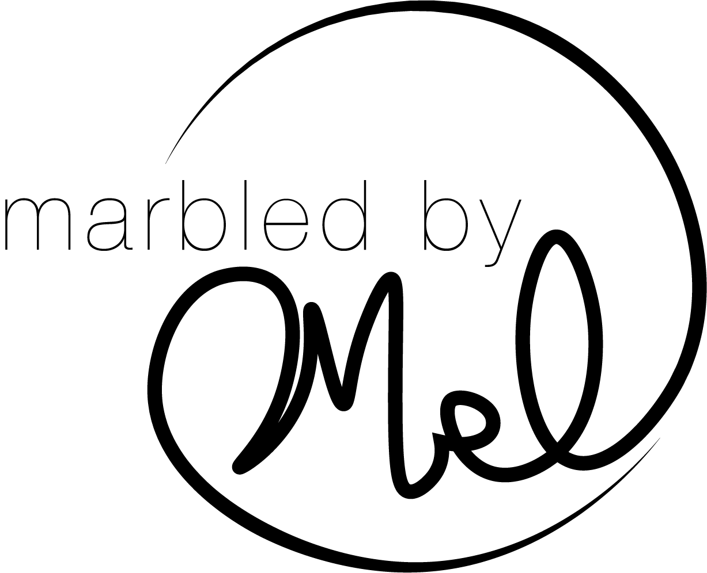
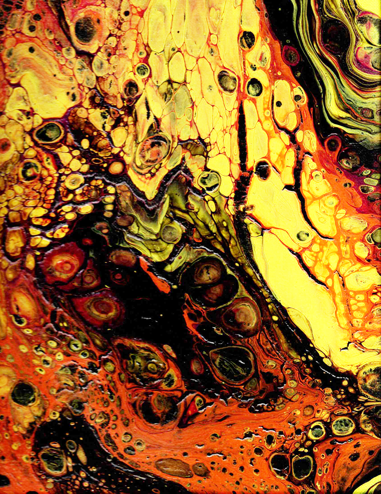
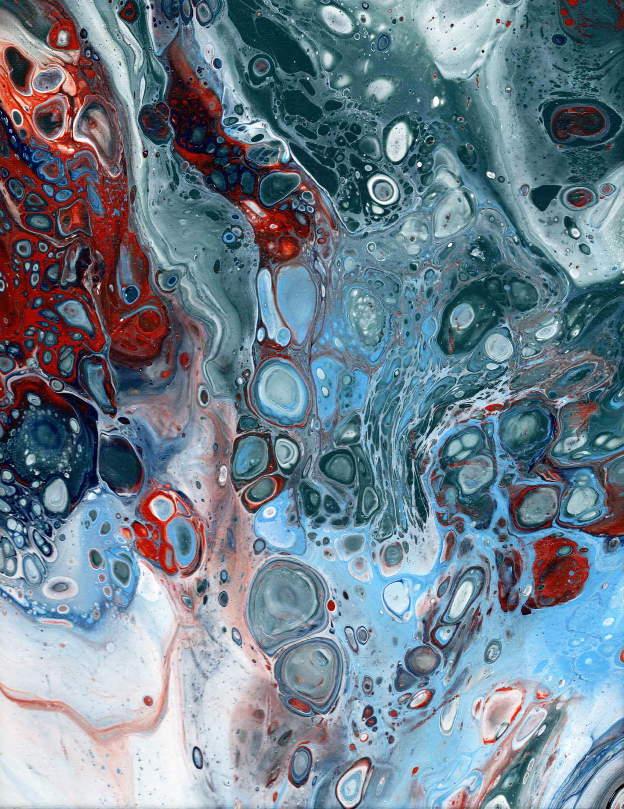
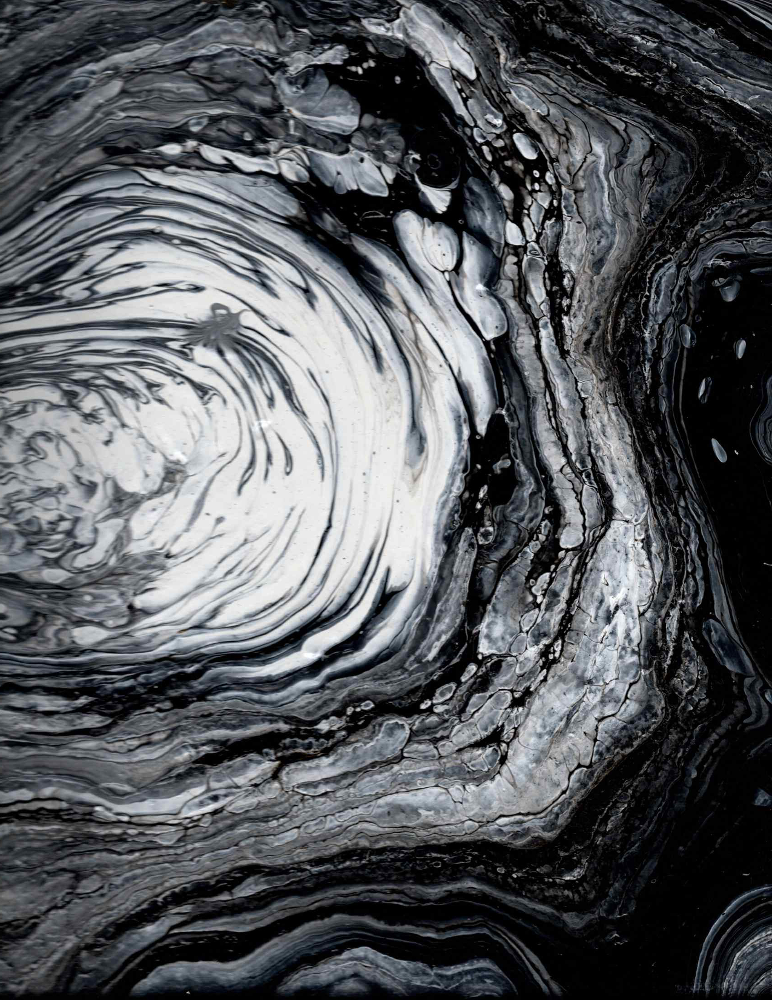
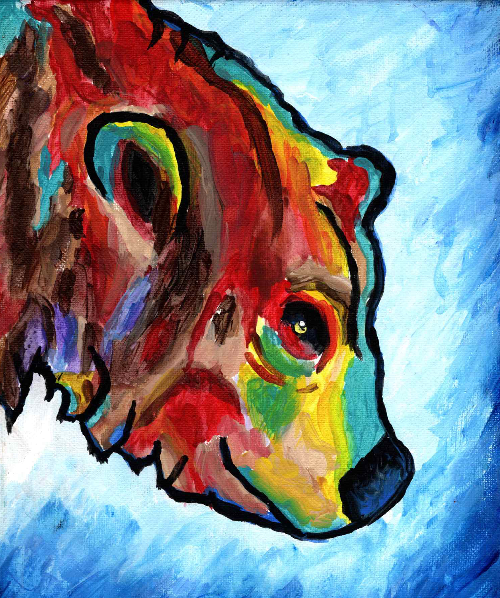
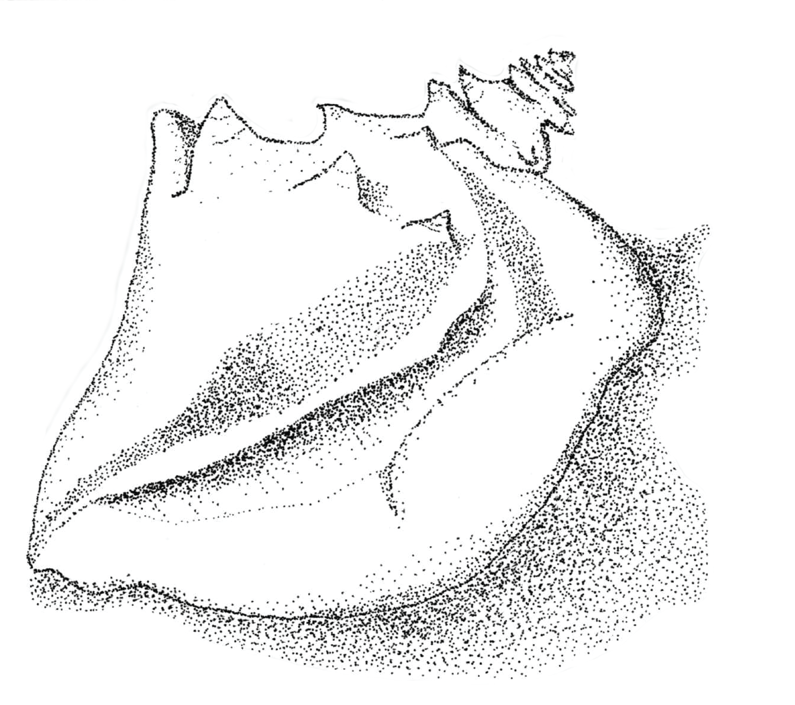

A painting to resemble the fall season.

The beauty of crashing waves supported by patriotism.

My first pour paint I created.A cute graphic used for stickers.Love yourself like boys love cars!A business logo made for a family business

Bears are less frightening with softer colors.Creating depth on a living creature without colors.

Combining depth and shadowing without color.